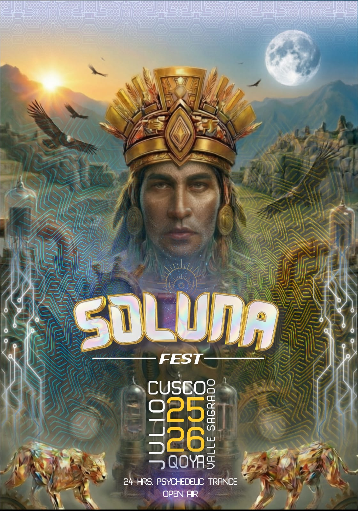

SOLUNA FEST
fecha: 25-26/07/26 hora: --pm
lugar: TBA,
Qoya, Valle Sagrado de los Incas


SOLUNA FEST
Espíritu del Amanecer
(Español)
En el corazón del Valle Sagrado de los Incas, donde las montañas guardan la memoria del tiempo, nos reunimos nuevamente para celebrar el encuentro entre la noche y la luz.
Soluna Fest – Espíritu del Amanecer es una travesía sonora de 24 horas open air, donde la música, el fuego y la naturaleza se unen para abrir un nuevo ciclo.
Cuando la noche cae sobre Qoya, las primeras frecuencias comienzan a despertar el valle. Psytrance, full on, techno y house guían la danza colectiva mientras el cielo gira sobre nuestras cabezas.
Alrededor del fuego recordamos algo antiguo:
que somos parte de la Tierra, del ritmo, del latido.
Y cuando finalmente el sol nace detrás de los Andes, la música se transforma en celebración de vida. Un instante donde el tiempo desaparece y solo queda la presencia.
150 almas libres.
Un valle sagrado.
Una fogata encendida.
Y el amanecer esperando ser danzado.
SOLUNA FEST
Espíritu del Amanecer.
(English)
In the heart of the Sacred Valley of the Incas, where the mountains hold the memory of time, we gather once again to celebrate the meeting of night and light.
Soluna Fest – Spirit of the Sunrise is a 24-hour open-air journey, where music, fire and nature merge to open a new cycle.
As night falls over Qoya, the first frequencies begin to awaken the valley. Psytrance, full-on, techno and house guide the collective dance while the sky slowly turns above us.
Around the fire we remember something ancient:
we are part of the Earth, the rhythm, the pulse.
And when the sun finally rises behind the Andes, the music becomes a celebration of life itself. A moment where time dissolves and only presence remains.
150 free souls.
One sacred valley.
One burning fire.
And a sunrise waiting to be danced.
SOLUNA FEST
Spirit of the Sunrise.